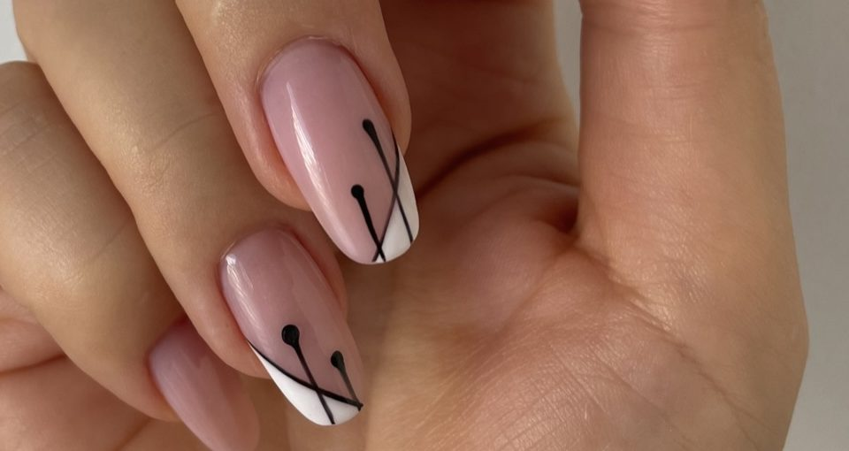
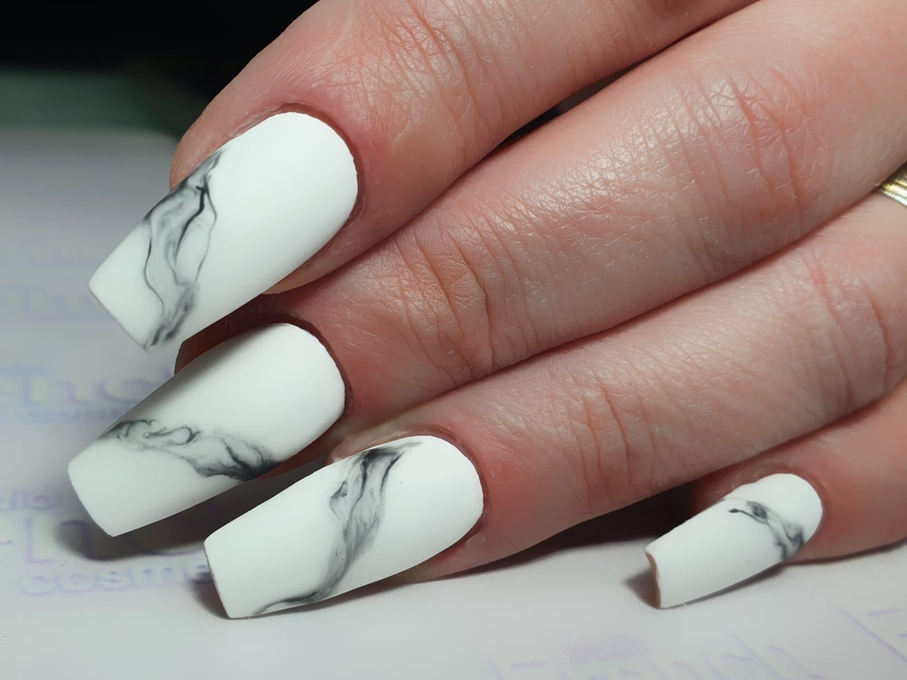
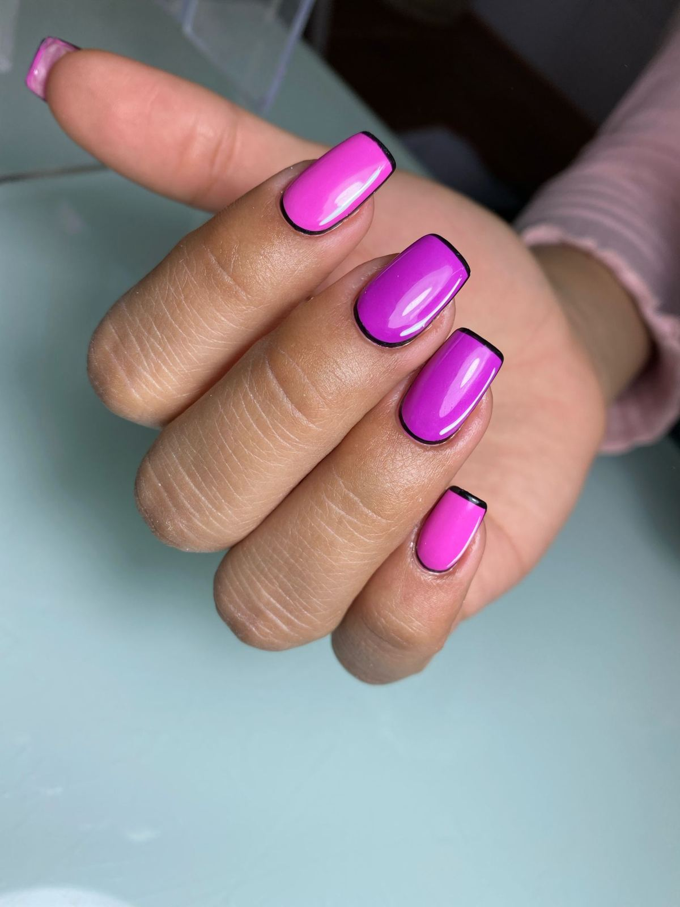
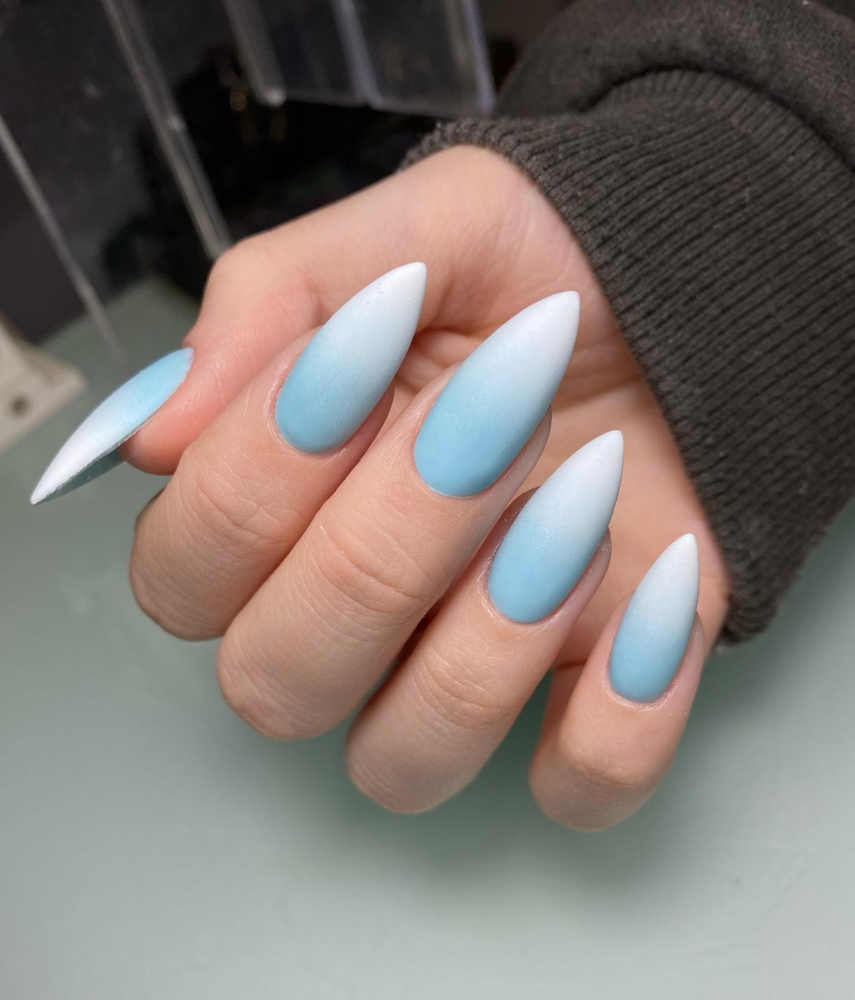
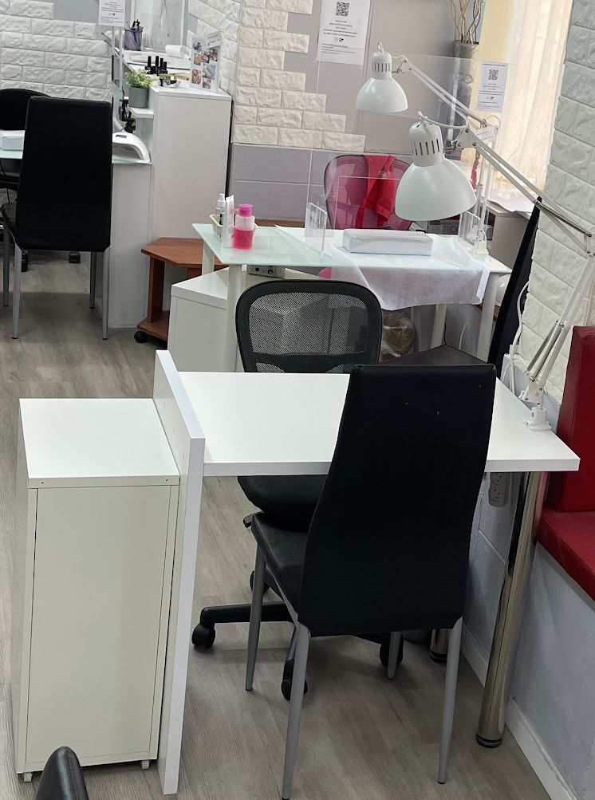
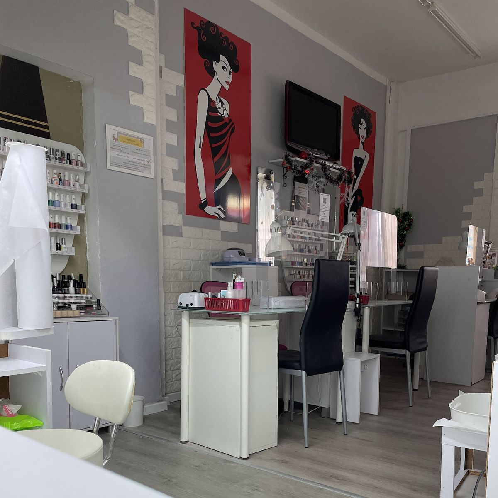
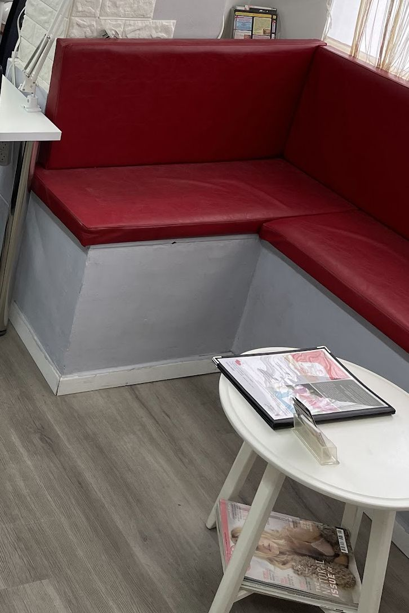
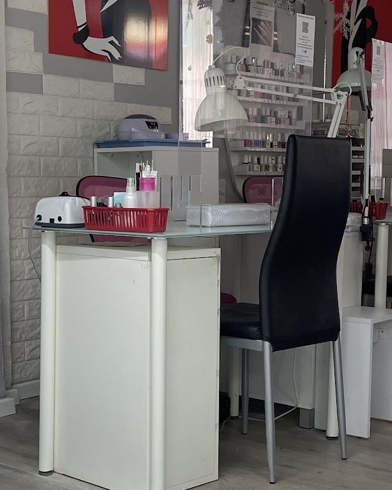

ג'ל לקGel polish
על הציפורן הטבעית, בידיים וברגליים.On natural nails, hands and feet.
קונספט לדוגמה שנבנה עבור Studio French · זה אינו האתר הרשמי של העסקA sample concept built for Studio French · This is not the business’s official website
מניקור, פדיקור, בניית ציפורניים ועיצוב, בסטודיו שבבית הקרנות, בלפור 2, חיפה.Manicure, pedicure, nail extensions and nail art, in the studio at Beit HaKranot, 2 Balfour St, Haifa.




לידיים, לרגליים ולריסים.For hands, feet and lashes.
על הציפורן הטבעית, בידיים וברגליים.On natural nails, hands and feet.
באורך ובצורה שבוחרים.In the length and shape you choose.
קווים, שיש, אומברה וקצה לבן.Lines, marble, ombré and a white tip.
גם לציפורניים קצרות מאוד.Even for very short nails.

כמה טכנאיות עובדות במקביל.Several technicians work side by side.
טיפוח רך לעור.Gentle care for the skin.
לריסים הטבעיים.For your natural lashes.
למניקור ולפדיקור עם טיפוח ספא.For a manicure and pedicure with spa care.

חדר מואר, ספה אדומה וקיר שלם של לקים.A bright room, a red sofa and a whole wall of polish.


״הייתי היום ב-Studio French בפעם הראשונה, ופשוט חוויה מושלמת! … אנסטסיה עשתה לי את הציפורניים בידיים – מדויקת, נקייה, והכול על הטיקט! … וקטיה עשתה לי את הציפורניים ברגליים – יסודית, מדויקת ועם הרבה סבלנות.״
“I was at Studio French today for the first time, and it was simply a perfect experience! … Anastasia did my fingernails – precise, clean, everything spot on! … And Katya did my toenails – thorough, precise and very patient.”
״שירות נעים ואדיב וטכנאיות מדויקות ומושלמות (במיוחד מרינה ואירה)!!! נוסעת אליהם במיוחד עוד משנת 2017״
“Pleasant, kind service and precise, perfect technicians (especially Marina and Ira)!!! I’ve been travelling to them especially since 2017.”
״סלון מעולה! האווירה נעימה, הכול נקי ומסודר. ז'ניה מהקבלה פשוט מקסימה - אדיבה, נחמדה ומתייחסת יפה לכל אחת. המניקור יצא ברמה הכי גבוהה!״
“A great salon! The atmosphere is pleasant, everything is clean and tidy. Zhenya at reception is simply lovely – kind, friendly and nice to everyone. The manicure came out at the highest level!”
״ממש אהבתי את השירות! עשו מניקור איכותי ומוקפד… רואים שבמקום הזה באמת דואגים ללקוחות.״
“I really loved the service! They did a high-quality, careful manicure… You can see this place really looks after its customers.”
כן. בסטודיו עובדות כמה טכנאיות, כך שאפשר לשלב כמה טיפולים באותו ביקור.Yes. Several technicians work in the studio, so you can combine treatments in one visit.
כן, גם לציפורניים קצרות מאוד. כשהן מתארכות ממשיכים בתיקונים, בלי הארכה מלאכותית.Yes, even very short ones. As they grow you carry on with refills, without artificial extensions.
כן, שובר למניקור ולפדיקור עם טיפוח ספא. קונים אותו בסטודיו או בחנות האונליין של הסטודיו.Yes, a voucher for a manicure and pedicure with spa care. You can buy it at the studio or in the studio’s online shop.
כן, למינציה לריסים הטבעיים.Yes, lamination for natural lashes.
בבית הקרנות, רחוב בלפור 2, חיפה.In the Beit HaKranot building, 2 Balfour Street, Haifa.